One thing I’ll miss most about Los Angeles is the convenient access to hiking and the outdoors. Whether you want a quicker yet still effective hike that’s right in the city, or a more strenuous hike that’s a little further away from the city, L.A. has options for you! I’ve made it my mission over the last couple years to explore more hikes around L.A., and have been pleasantly surprised by the many various trails out there.
SoCal has more of a dry climate, so many trails in L.A. don’t have much shade (with a few waterfall hike exceptions). As you probably know, SoCal sun can be quite brutal, so I would highly recommend doing your hike as early as possible. 1) There will likely be fewer people on the trail, and depending on how popular the trail is, you’re more likely to find parking (not to mention less traffic to get there, especially if you go on the weekend!), and 2) You can beat the heat by starting and finishing earlier. But since you’re likely to find yourself under the sun at some point, make sure to bring sunglasses, sunscreen, and a hat, especially one that covers most of your face.
If you’re going on a longer hike, i.e. one that will take a half or full day (e.g. Cucamonga Peak or Mt Baldy), here are some essentials to bring:
- Water reservoir: I used to think that these were weird and preferred drinking out of normal water bottles, but quickly found that they make the hike so much easier because you don’t have to pause and reach into your backpack every time you want a drink, you don’t have to hold your water bottle, and, perhaps most importantly, having the straw right next to you at all times ensures that you keep drinking consistently. As someone who easily gets dehydrated on long hikes, I’ve found that you drink more and are more likely to stay hydrated if you’re taking sips constantly, rather than drinking big gulps a few times. Using a water reservoir that you can carry in your backpack is ideal, and will help ensure that you stay hydrated throughout the hike, hands-free! We used this one and this one.
- Hiking shoes: Sturdy hiking shoes go a long way! I highly recommend Merrill Moab shoes (see here and here) – I found them to be very sturdy, pretty comfortable without much break-in time, and high quality with a good grip, which especially comes in handy on steep/more slippery trails. And I like the mid-heel ones as it keeps dirt from getting into your shoes on the trail (just make sure to wear ankle or quarter length socks!)
- Lunch/snacks: Sandwiches are a go-to meal (I like an almond butter/peanut butter sandwich or bread and salami). I recommend bringing both sweet (these Clif bars are my fav!) and savory snacks, as you just might find yourself craving both (salt is especially important to avoid dehydration!). It’s also totally recommended to bring snacks that make you happy 🙂
- Water and electrolytes: make sure to bring plenty of fluids!
If you’re looking to try a new hike or explore more of the L.A. hiking scenery, here are some of my favorites, grouped by location.
Culver City
Baldwin Park / Kenneth Hahn
This park/recreational area makes for a perfect brisk morning walk because it’s right in the city, so you don’t have to venture too far. The trails are more easy/moderate, but you can certainly get a good walk in! Note that there’s a $7/day vehicle entrance fee on weekends and holidays.
Culver City Stairs / Baldwin Scenic Hills Overlook
If you want an effective but quick workout, the 282 steps of the Culver Stairs make for a popular workout spot, also right in the city (not to be confused with the Culver Steps, which is the center of the shopping/restaurant area in downtown Culver!). If you don’t want to come back down the stairs, you can also prolong the workout by walking the longer way back down, on the path that zigzags its way down the hill.
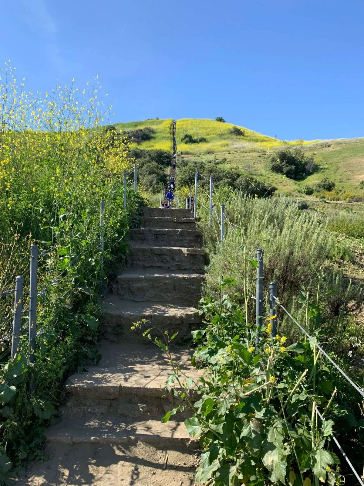
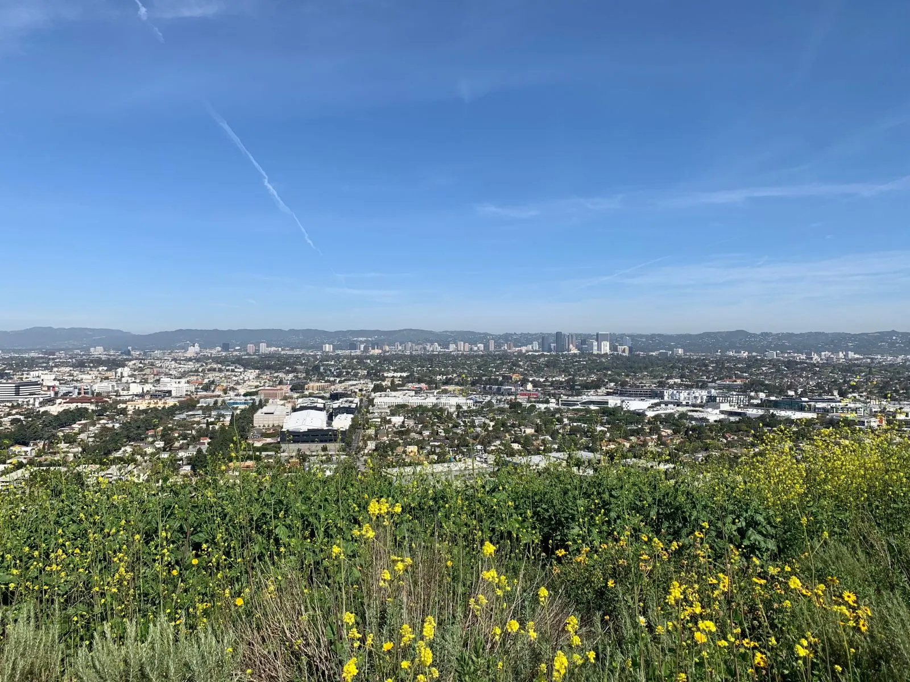
Los Angeles (in the city)
Runyon Canyon
Runyon Canyon (2000 N Fuller, Los Angeles 90046) is another popular hike right in the city, near Hollywood. It’s a moderate hike so you can definitely get a good workout in, plus it’s got amazing views of L.A. including the Hollywood sign. The area is organized as a loop — there’s two steeper hikes that make a circle and meet at the top, and a paved path that goes up through the middle. So it’s a choose-your-own-adventure! I like hiking up clockwise and coming down the other side. If you want to add some running challenge into the mix, you can also run up the paved path (it’s a slanted uphill for about a mile, which makes for a very effective workout lol). Or do both! The loop is about 2.7 miles, so not too long. There’s street parking by the entrance – it can be harder to find parking on the weekends, but every time I’ve been able to find a spot.
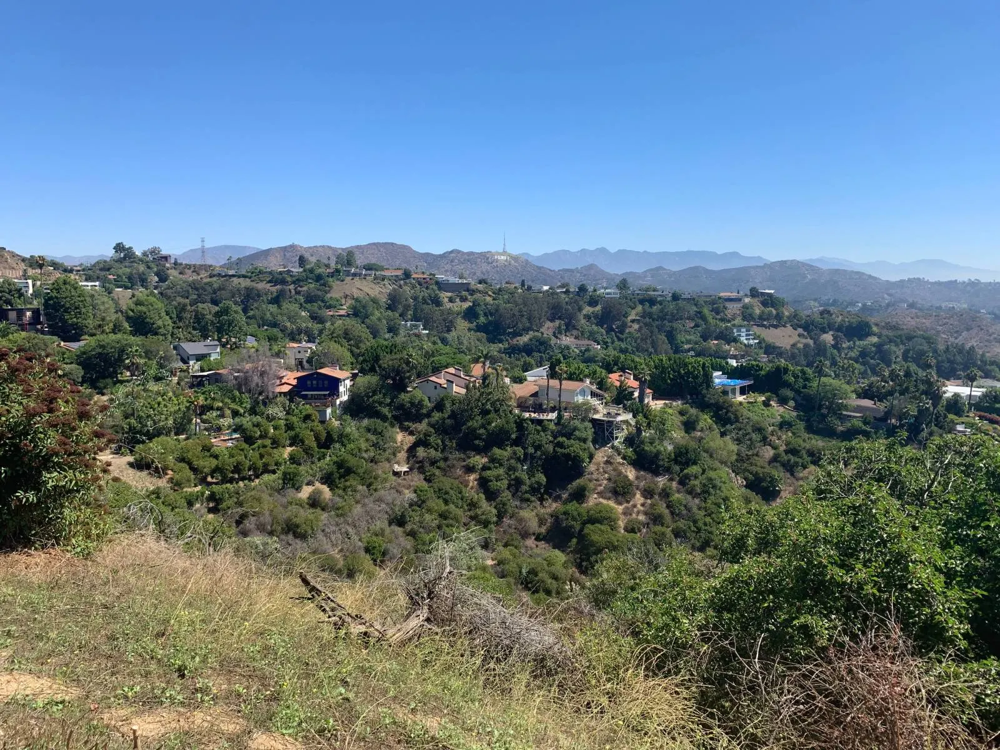
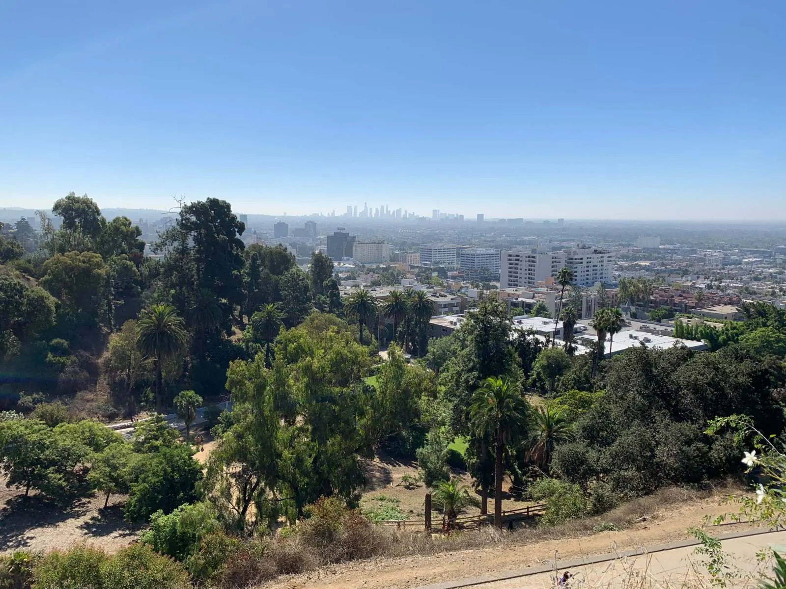
Griffith Park
Home to the well-known Hollywood sign hike, Griffith Park is huge — at over 4300 acres, Griffith Park is 4 times the size of San Francisco’s Golden Gate Park and more than 5 times the size of New York’s Central Park! There are over 50 miles of trails you can explore, including the Mount Hollywood trail (start at 4730 Crystal Springs Dr.) and trails around Griffith Observatory. The Hollywood Sign via Canyon Drive hike on AllTrails is a great one to start with — it’s about 6 miles / 3 hours total and takes you behind the Hollywood sign, where you get a nice 360º view of the surrounding scenery. Make sure to bring a hat and sunscreen as there isn’t much shade out there!

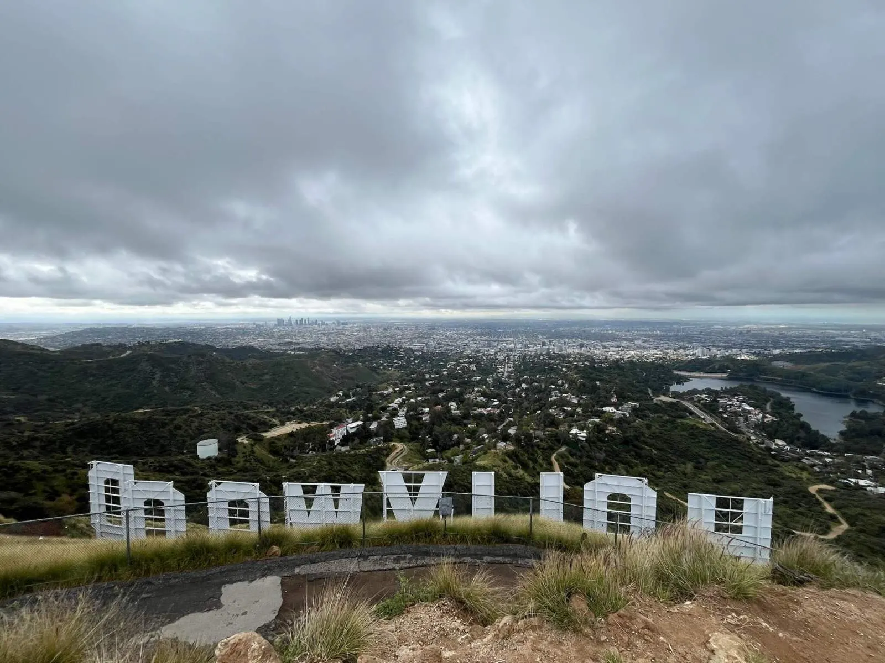
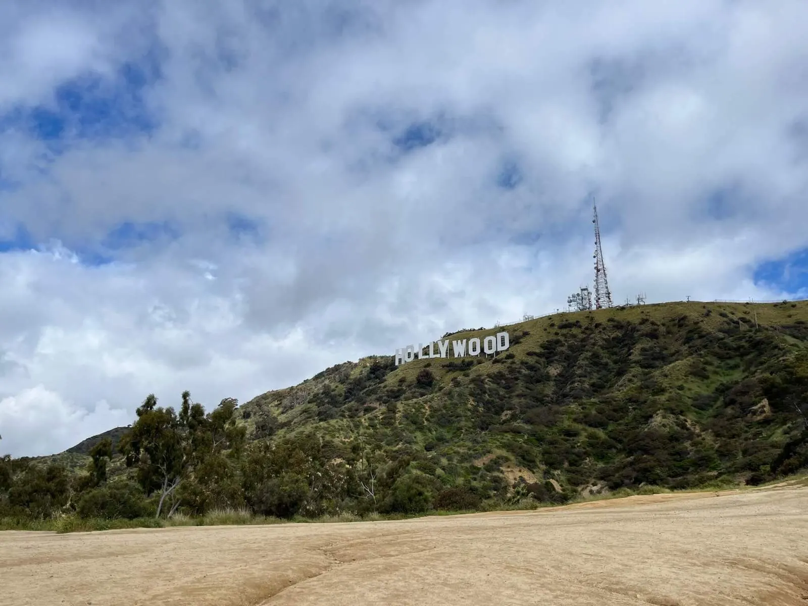
Elysian Park
The Elysian Park West Loop Trail, right by Dodger Stadium, is a 2.4-mile loop. This trail has particular significance for me as it is where I did my first trail run when I officially started training for a marathon! It’s one of the best trail runs I’ve found in L.A. proper because it isn’t too steep to the point where you find yourself constantly having to walk, or too long, but just the right amount of incline where you get a great run (or hike!) in with one or two loops. It feels like a mini oasis within the city (which you get a nice view of as well!). And there’s plenty of street parking – park on the side street at Elysian Park Dr and Stadium Way.
Eaton Canyon Falls (Pasadena)
This is one of my favorite waterfall hikes in L.A. – the trail is shady, green, and beautiful, and you’re rewarded at the end with a decent waterfall in the springtime (and a swing nearby!). But be prepared to get your feet wet! There are multiple streams to cross, most of which don’t have rocks or logs set up for you. The first few ones, I gingerly stepped my way through them trying as hard as possible to keep my shoes dry, but eventually I gave up and just embraced the cool water sloshing through my feet lol. (I saw one or two people who somehow managed to stay dry the whole time – I have no idea how they did it.) The trail is 3.5 miles out-and-back and it’s in Pasadena area, so you don’t have to go too far out of your way to enjoy this beautiful hike!
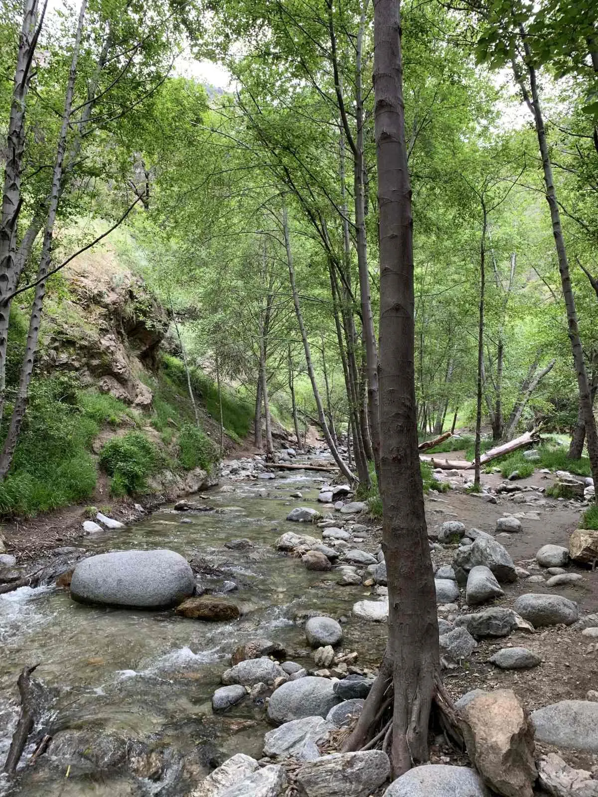
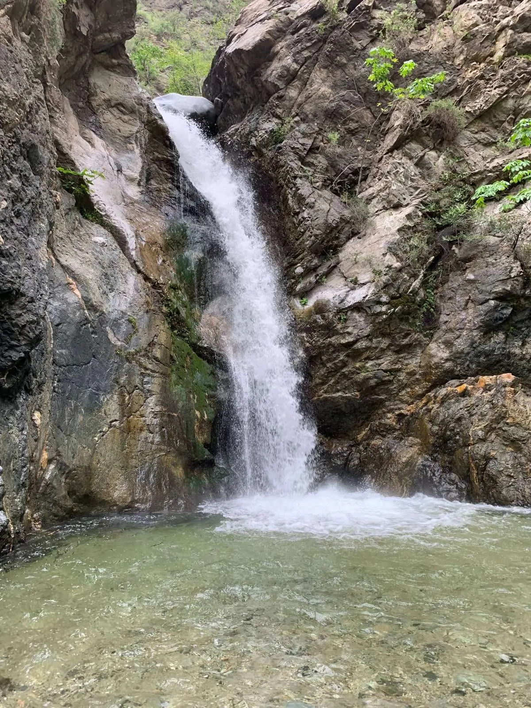
Angeles National Forest
Cucamonga Peak
If you want a more strenuous, all-day hike, the Cucamonga Peak via Icehouse Canyon trail is about 12-13 miles, or 8 hours. The view at the top is truly phenomenal and you can see super far on a clear sunny day. Make sure to bring a hat and plenty of water, Gatorade, or drink of choice as there’s not a lot of shade. And make sure to stay on the right path. At one point we took the wrong turn and ended up having to hike an extra 5 miles lol – do not make the same mistake!
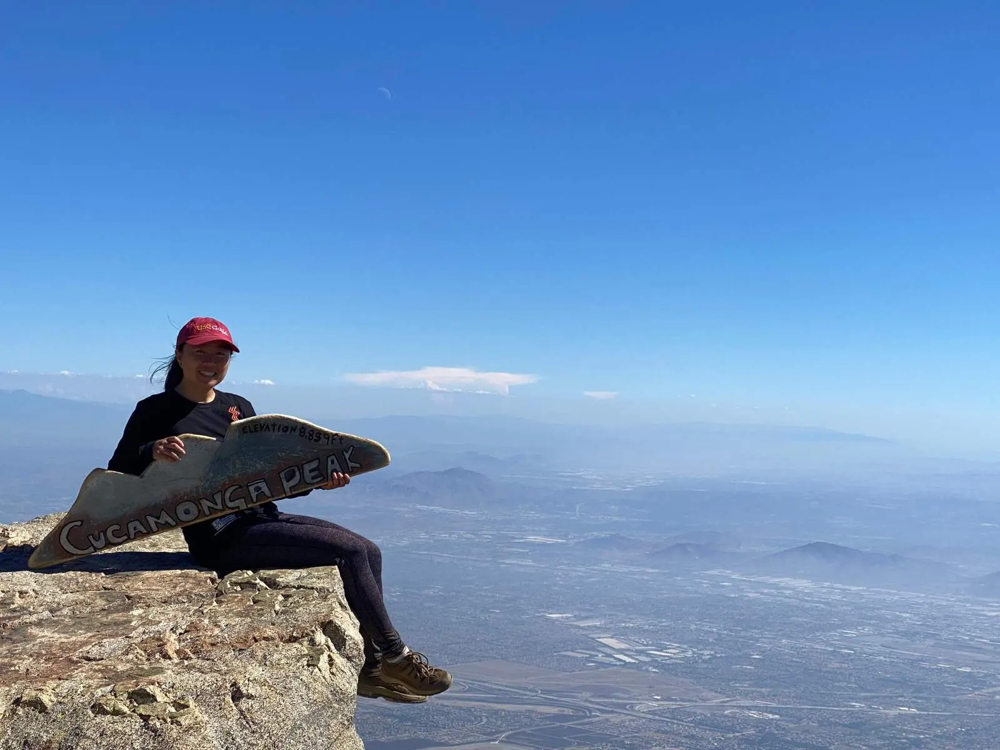
Mt Baldy
If you want a truly strenuous hike, Mt Baldy is not for the faint of heart or the casual hiker! At 11 miles out-and-back/about 8 hours, this hike brings you to the highest point in L.A. at 10,064 feet and covers almost 4000 feet of elevation. The first time I did this hike I didn’t make it to the top due to dehydration/altitude sickness. The trail starts from the same spot as Icehouse Canyon trail.
More waterfall hikes! Here are some more waterfall hikes on my list that I didn’t get to do:
- Switzer Falls (3.7 mi)
- Trail Canyon Falls (4.6 mi)
- Millard Canyon Falls (2.5 mi)
- Stoddard Falls (1.5 mi)
- San Antonio Falls (1.4 mi)
- Bonita Falls (2 mi)
- Lewis Falls (1 mi)
Santa Monica Mountains/Pacific Palisades
Topanga State Park/Santa Monica Mountains offers a huge green expanse of trails! Here are just a few to check out.
Los Leones Trail
At about 4.5 miles out-and-back, this popular moderate hike offers gorgeous views of the surrounding scenery and Santa Monica Bay. You can hike to the Parker Mesa Overlook in Malibu, which is about 3 miles in. There’s plenty of street parking, and the area isn’t too far from the Getty Villa and Malibu, so you don’t have to venture too far out from Santa Monica!
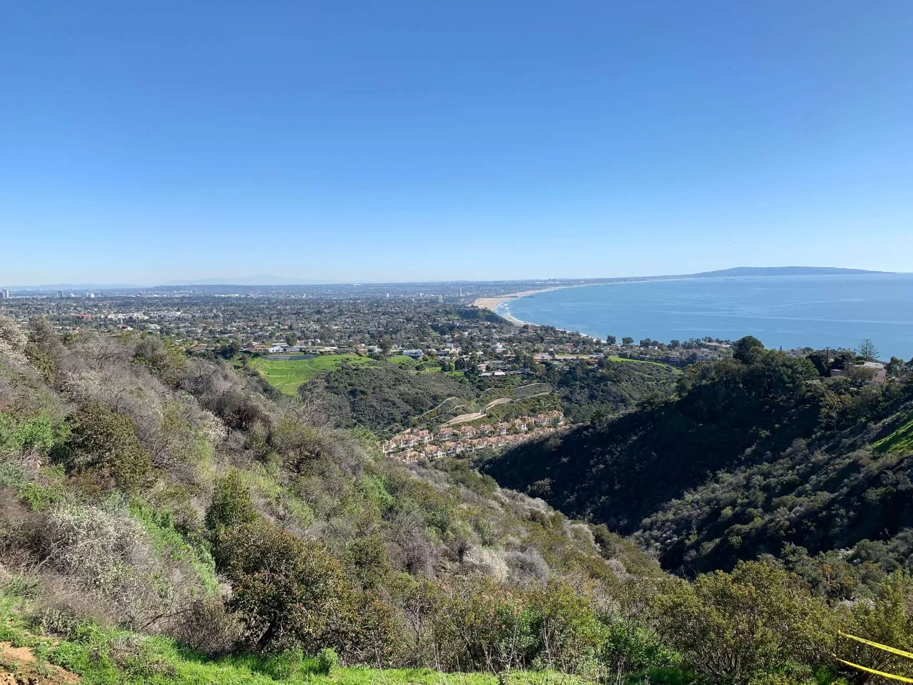
Temescal Canyon Trail
This 3 mi-loop trail in Topanga State Park is a popular moderate hike with beautiful views of the surrounding hills and ocean! You’ll also pass by a small waterfall. Note that there’s a $10 or $12 parking fee to park at the trailhead.
Santa Ynez Falls Canyon Trailhead (Topanga Canyon)
Unlike many trails in L.A., this 2.5-mile roundtrip trail is in a forest so it’s more shady. The trail can be pretty narrow and a little hard to find at times, but there’s a waterfall at the end that you climb a rope to see, which adds some adventure to your hiking routine!
Escondido Falls
This popular trail is 3.5 miles out-and-back with a nice, impressive waterfall at the end. There’s street parking on the PCH right outside (it’s a wide street so be careful when crossing!).
If you want more challenge and adventure, you can continue a little further to the upper falls. There’s a warning sign at the entrance, but people still do it. It takes about 10-15 minutes, but the rocks are quite gravelly and slippery and very steep, so it’ll probably take longer to get back down. Towards the top there’s a rope to help you finish the last leg. But you’re rewarded with a slightly taller and very refreshing waterfall at the end!
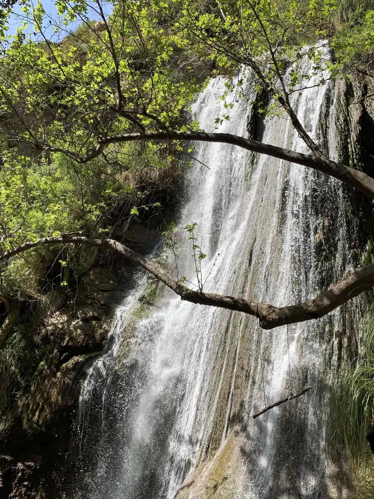
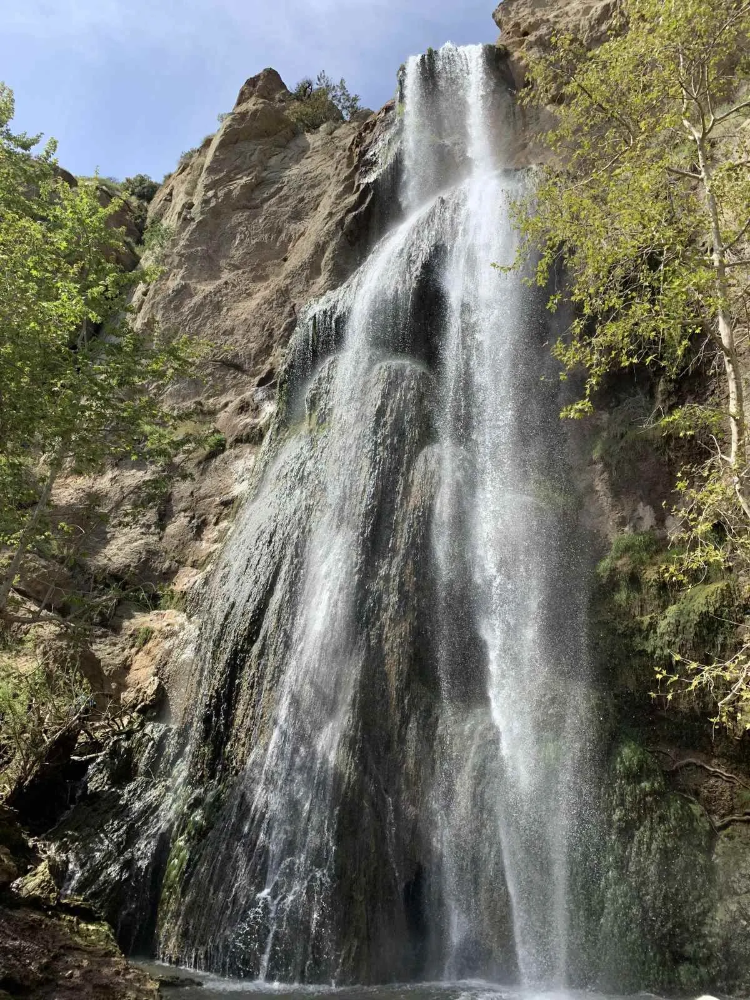
For more things to do in L.A., check out my blog on things to do or places to eat around L.A.!